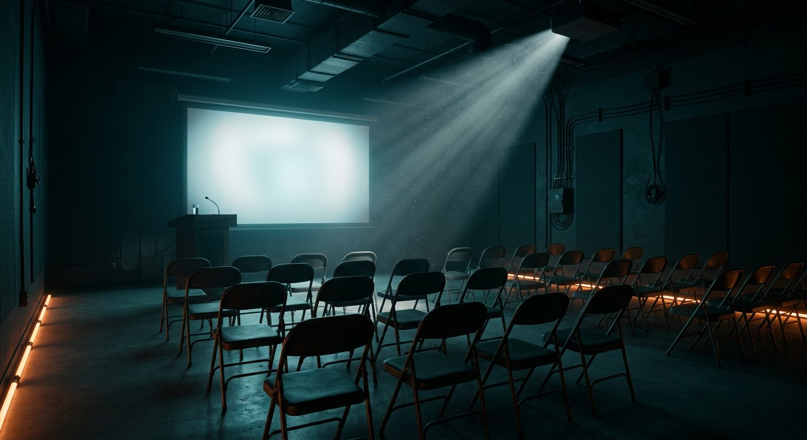
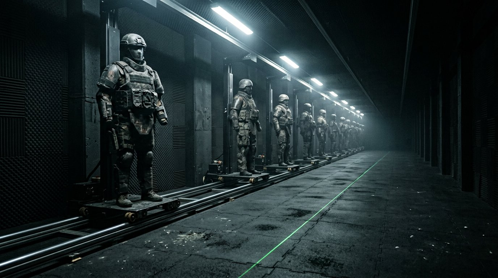

Tous
10 novembre 2026 → 10 décembre 2026
Collaboration Phantom Blade Zero
Charm Flaming Mane, Calling Card collab, Avatar Lion Dance, Spray Red Threads, Action Boundless Thirst, emotes solo/duo
Ce qui tourne en ce moment dans Delta Force. État au 19 novembre 2026.

Charm Flaming Mane, Calling Card collab, Avatar Lion Dance, Spray Red Threads, Action Boundless Thirst, emotes solo/duo
Seven-Star Sword - G3 (apparence légendaire gratuite) + Tactical Armament Vouchers — cumuler du temps de survie en match
Collectible figurine dans les nids d'oiseaux de toutes les cartes
Tactical Armament Vouchers, Calling Card Taunt
Avatar Breakout, Armament Vouchers
Toro Scatenato - Tank, Premium Weapon EXP Token
Contacts de faction, missions, badge, milestones, hunts
Badge de faction ; Lv.2 débloque milestones et hunts
Ammo Selection Packs, gun packs Brakkesh, Tactical Armament Vouchers, emblèmes Haavk et Ahsarah
Brakkesh Tokens (ramasser un ID Tag de faction + terminer une mission milestone)
Brakkesh Tokens pour la boutique d'event
Figurine Sleepy Zoya (mallettes)
Quantum Keys, Logistics Vouchers, Advanced Secure Container 7-Day Access Card
Northern Frontier - Assault Vehicle, Overtime - AK-12
M700 Serenity, Claymore Zero-Grav, Badge Aurora, FSV Ahsarah Guard, Avatar Vehicle Enthusiast
Tokens → Gear Tickets, keycard copy packs, loadouts tournants
Version cachée rare depuis les conteneurs
La moitié des changements d'Aurora ne figure dans aucun guide parce qu'ils ne sont pas spectaculaires. Ce sont pourtant ceux qui modifient vos habitudes.
Un objet de collection rouge nommé Soul apparaît dans les nids d'oiseaux de toutes les cartes d'Operations, accompagné d'une arme de mêlée katana et de cosmétiques. Si vous faites déjà les nids par réflexe, cet événement ne vous coûte aucun détour.

Notes de version officielles S12 (10/11/2026) et correctif du 12/11/2026.